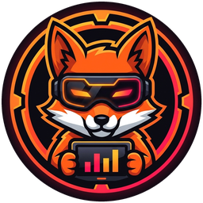
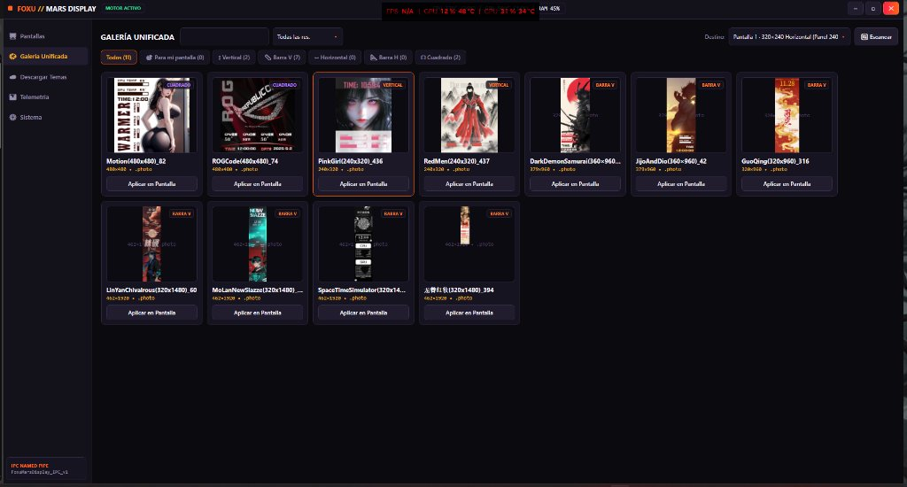
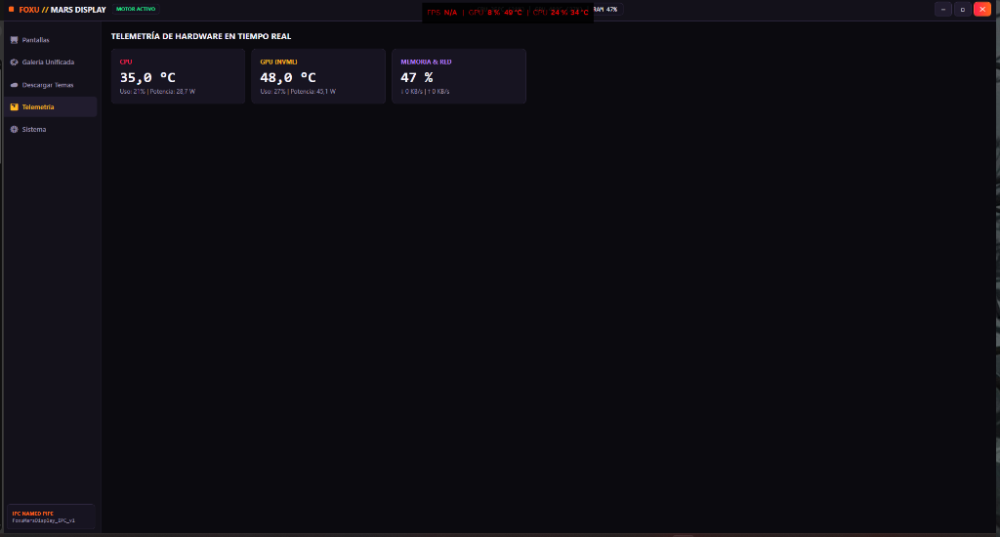

EN
ES

FOXU // MARS DISPLAYThe source-available SOEYI alternative (free for personal use) for Mars Gaming VMAX , MacroSilicon MS9132 and AIC USB LCD screens — built-in theme store, FOXU // STUDIO editor, ~0.6% CPU, zero UAC.
Download Setup v2.1.1
View on GitHub
Support on Ko-fi
~0.6% CPU
~60 MB RAM
328+ cloud themes
FOXU // STUDIO
Zero UAC
5 languages
Screenshots
Connected USB displays with live preview, brightness and rotation. Cloud theme store with orientation and resolution filters. 
Unified gallery: filter, zoom and apply in one click. 
Real-time CPU, GPU, RAM and network telemetry.
FoxuMarsDisplay vs stock SOEYI
Stock SOEYI FoxuMarsDisplay CPU (2 screens) ~6–12% ~0.6–0.9% RAM ~300–600 MB ~60 MB MS9132 8 s reboot possible Fixed (2 Hz keep-alive) UAC on every start yes No Theme store no 233+ official + mirror Source-available no Non-Commercial Source-Available
FoxuMarsDisplay Non-Commercial Source-Available License — Free for personal use. Not affiliated with Mars Gaming, SOEYI, MacroSilicon or TURZX.